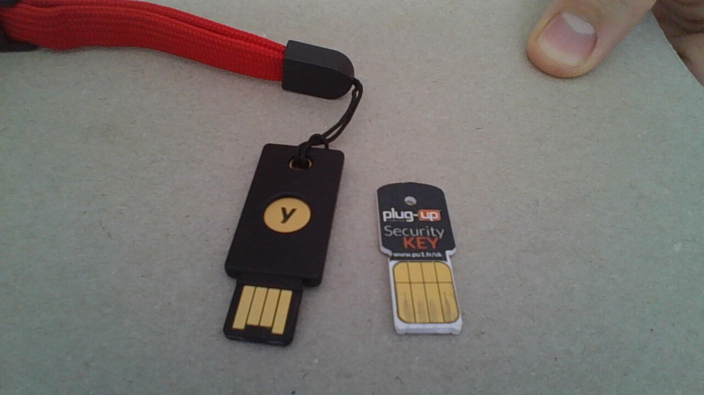

کارت هوشمند
یکشنبه ۰۲ خرداد ۱۳۹۵
۵ دقیقه مطالعه
به تازگی دو کلید سختافزاری تهیه کردم، یکی توسط دوستی به من هدیه داده شده و یکی را هم خریدم. هر دو آنها از پروتکل U2F پشتیبانی میکنند ولی کلید Yubikey 4 قابلیتهای بیشتری دارد از جمله قابلیت اسمارتکارت که در این مقاله به آن میپردازم. البته من متخصص امنیت نیستم و این مطلب صرفا جنبه کاربردی دارد.
چرا کلید سختافزاری؟
در حالت عادی ما با بک کلمه عبور و پسورد به حساب کاربریمان دسترسی پیدا میکنیم. این روش حداقل امنیت را تامین میکند. اگر کسی پسورد ما را بدست بیاورد به حساب ما دسترسی پیدا میکند. بهترین روشی که در حال حاضر برای امنتر کردن دسترسی به حسابها بوجود آمده است «تصدیقیابی دو مرحلهای» است. در این روش بعد از وارد کردن پسورد اصلی کاربر باید یک پسورد یکبار مصرف نیز وارد کند. این پسورد میتواند از طریق یک برنامه تولید شود یا از طریق تلفن یا پیامک به شماره تلفن از پیش مشخص شده فرد ارسال بشود و یا اینکه توسط یک کلید سختافزاری تولید بشود. معمولا از کاربر هر سی روز یکبار این پسورد دوم پرسیده میشود. نکته مهم در مورد پسوردهای یکبار مصرف اینست که اگر کسی آنها را به دست بیاورد نمیتواند هیچ سوءاستفادهای بکند چرا که پسورد باطل شده است.
در صورتی که از کلید سختافزاری برای اینکار استفاده شود، فقط کافیست که کلید در پورت USB وارد شده باشد. در مورد Yubikey 4 باید موقعی که مرورگر درخواست میکند، دگمه روی کلید لمس شود.
کارت هوشمند ابزاری برای پشتبیانگیری از کلیدهای خصوصی نیست.
کلید سختافزاری برای افرادی که از کامپیوترهای مختلفی استفاده میکنند یا ممکن است همواره گوشی هوشمند به همراه نداشته باشند گزینه مناسبی است. در ضمن از تغییرات نرمافزار گوشی هوشمند هم تاثیر نمیپذیرد و کار با آن ساده است. از همه اینها مهمترین برای من قابلیت انتقال کلیدهای خصوصی در فرآیند رمزنگاری به کمک کلیدهای عمومی است. در این روش من کلیدهای خصوصیام را روی کلیدسختافزاری منتقل میکنم و برنامه GnuPg کلیدهای خصوصی را همواره از روی کلید میخواند و نه از روی دیسک. این قابلیت کلید آنرا تبدیل به یک اسمارتکارت یا «کارت هوشمند» میکند. نکته مهمی که اینجا وجود دارد اینست که بدانیم کلید سختافزاری روشی برای پشتبیانگیری از کلیدهای خصوصی نیست، بلکه صرفا جهت راحتتر کردن دسترسی به کلیدها بکار میرود بدون اینکه آنها را در خطر بیاندازد. چرا که امکان دانلود کردن کلید خصوصی از Yubikey 4 وجود ندارد.
امکان دانلود کردن کلید خصوصی از Yubikey 4 وجود ندارد.
در تصویر زیر هر دو کلید قابل مشاهده هستند. یکی کوچکتر و شبیه سیمکارت و محصول شرکت Happlink است. قیمتش تقریبا پنج یورو است. دیگری مشکلی رنگ و بزرگتر است بنام Yubikey 4 و محصول شرکت Yubico که به گمانم معروفترین شرکت تولیدکننده کلیدهای سختافزاری است. قیمت این یکی چهل یورو است.

چرا رمزنگاری با کلید عمومی؟
مدتهاست ایدهی اینکه ما ایمیل رمزنگاری شده به یکدیگر ارسال کنیم در عمل شکست خورده است. بنابراین اصلا چرا از رمزنگاری استفاده کنیم؟ پاسخ اینست که رمزنگاری عمومی برای اهداف مختلفی استفاده میشود من جمله امضای بستههای نرمافزاری. مثلا برای آپلود یک پکیج به یک مخزن ppa روی لانچپد باید آنرا امضا کرد. همینطور برای آپلود یک پکیج به مخازن دبیان باید آنها را امضا کرد. چنانچه در کامیونیتی آنلاینی مثل آنچه در مورد دبیان وجود دارد نیز بخواهیم فعالیت کنیم باید کلید شناخته شدهای در Web of Trust داشته باشیم. چرا که ما افراد را شخصا ملاقات نمیکنیم و تنها از طریق ایمیل و امضای دیجیتالی ما است که آنها به ما اعتماد میکنند. یا مثلا اگر از بیتکوین استفاده کنید باز هم باید با کلیدهایمان تراکنشها را امضا کنیم و بدون دسترسی به کلیدها امکان دسترسی به منابع مالی وجود نخواهد داشت.
شناساندن کلیدها به لینوکس
قسمت اول افزودن udev rules های لازم برای شناساندن این کلیدهاست. کافیست یک فایل جدید در مسیر /etc/udev/rules.d/70-u2f.rules ایجاد کنیم و محتوای زیر را به آن اضافه کنیم:
# this udev file should be used with udev 188 and newer
ACTION!="add|change", GOTO="u2f_end"
# Yubico YubiKey
KERNEL=="hidraw*", SUBSYSTEM=="hidraw", ATTRS{idVendor}=="1050", ATTRS{idProduct}=="0113|0114|0115|0116|0120|0402|0403|0406|0407|0410", TAG+="uaccess"
# Happlink (formerly Plug-Up) Security KEY
KERNEL=="hidraw*", SUBSYSTEM=="hidraw", ATTRS{idVendor}=="2581", ATTRS{idProduct}=="f1d0", TAG+="uaccess"
# Neowave Keydo and Keydo AES
KERNEL=="hidraw*", SUBSYSTEM=="hidraw", ATTRS{idVendor}=="1e0d", ATTRS{idProduct}=="f1d0|f1ae", TAG+="uaccess"
# HyperSecu HyperFIDO
KERNEL=="hidraw*", SUBSYSTEM=="hidraw", ATTRS{idVendor}=="096e", ATTRS{idProduct}=="0880", TAG+="uaccess"
LABEL="u2f_end"
بعد از ریستارت دامون udev یا با ریستارت سیستم این قوانین فعال میشوند. مرورگر گوگل کروم به صورت پیشفرض از این کلیدها پشتیبانی میکند و نیاز به کار خاصی نیست. فایرفاکس هم مشغول پیادهسازی این قابلیت است. حالا میتوان در تنظیمات امنیتی گوگل و گیتها و هر سایت دیگری که از U2F پشتیبانی میکند و جزو کنسرسیوم fido است، کلیدسختفازاریمان را رجیستر کنیم و از آن برای گام دوم لاگین استفاده کنیم.
تهیه پیشتیبان فیزیکی از کلیدها
از اینجا به بعد ما کاری با کلید Happlink یا همان plug-up نداریم. این کلید فقط برای تولید پسورد بدرد میخورد و قابلیت ذخیره کلید خصوصی ندارد. البته گویا نسخه جدیدش اینکار را انجام میدهد ولی من قدیمیاش را دارم. برای اینکار ما از Yubikey 4 استفاده میکنیم. اولین مرحله تهیه نسخه پشتبیان از کلید خصوصیمان است. اگر کلیدی ندارید باید با دستور gpg –gen-key یکی بسازید.
gpg --armor --export > pgp-public-keys.asc
gpg --armor --export-secret-keys > pgp-private-keys.asc
gpg --armor --gen-revoke [your key ID] > pgp-revocation.asc
خروجی دستورات بالا را پرینت کنید و همچنین روی یک سیدی رایت کنید و در جای مطمئنی نگهداری کنید. در غیر اینصورت اگر این فایلها از بین بروند و یا در صورتی که بعد از انتقال آنها به کلیدسختافزاری، کلید گم یا خراب بشود، دیگر امکان دستیابی به محتوای وابسته به این کلید وجود نخواهد داشت. من خروجی دستورات بالا را به QR کد تبدیل و چاپ کردم که بازگردانی آن راحتتر باشد. راهنمای لازم را روی گیتهاب پیدا میکنید.
OpenPGP Smartcard Support
برای فعال کردن قابلیت اسمارتکار برای اپنپیجیپی باید بستههای زیر را نصب و سرویس مربوطه را فعال کنیم:
$ sudo pacman -S pcsc-tools, ccid, libusb-compat
$ sudo systemctl enable pcscd.serviceand
$ sudo systemctl start pcscd.service
اگر همه چیز درست انجام شود میتوانیم وضعیت اسمارتکارتمان را چک کنیم:
# Check card status
[mehdi@x250 ~]$ gpg --card-status
Reader ...........: Yubico Yubikey 4 OTP U2F CCID 00 00
Application ID ...: XXXXXXXXXXXXXXXXXXXXXXXXXXXXXXXX
Version ..........: 2.1
Manufacturer .....: Yubico
Serial number ....: XXXXXXXX
Name of cardholder: [not set]
Language prefs ...: [not set]
Sex ..............: unspecified
URL of public key : [not set]
Login data .......: [not set]
Signature PIN ....: not forced
Key attributes ...: rsa2048 rsa2048 rsa2048
Max. PIN lengths .: 127 127 127
PIN retry counter : 3 0 3
Signature counter : 0
Signature key ....: [none]
Encryption key....: [none]
Authentication key: [none]
General key info..: [none]
ابزار دیگری نیز برای اینکار هست بنام pcsc_scan. حالا میتوانیم کلیدها را روی کارت منتقل کنیم.
[mehdi@x250 ~]$ gpg --edit-key mehdi@mehdix.ir
gpg (GnuPG) 2.1.12; Copyright (C) 2016 Free Software Foundation, Inc.
This is free software: you are free to change and redistribute it.
There is NO WARRANTY, to the extent permitted by law.
Secret key is available.
sec rsa2048/2E292C9F
created: 2016-05-16 expires: 2017-05-16 usage: SC
trust: ultimate validity: ultimate
ssb rsa2048/82B64022
created: 2016-05-16 expires: 2017-05-16 usage: E
[ultimate] (1). Mehdi Sadeghi <mehdi@mehdix.ir>
gpg> key 1
sec rsa2048/2E292C9F
created: 2016-05-16 expires: 2017-05-16 usage: SC
trust: ultimate validity: ultimate
ssb* rsa2048/82B64022
created: 2016-05-16 expires: 2017-05-16 usage: E
[ultimate] (1). Mehdi Sadeghi <mehdi@mehdix.ir>
gpg> keytocard
Please select where to store the key:
(1) Signature key
Your selection? 1
اگر هم چندین کلید داریم با تکرار دستور keytocard میتوانیم همه آنها را منتقل کنیم. با این دستور اول باید پسورد کلید خصوصی را وارد کنیم بعد هم پسورد ادمین کلید را. موقع خروج هم تنظیمات را ذخیره میکنیم:
gpg> quit
Save changes? (y/N) y
پسورد ادمین پیشفرض یوبیکی 12345678 و پین پیشفرض آن 123456 است. با روش زیر میتوان تنظیمات اسمارتکارت را تغییر داد:
[mehdi@x250 ~]$ gpg --card-edit
gpg/card> help
quit quit this menu
admin show admin commands
help show this help
list list all available data
fetch fetch the key specified in the card URL
passwd menu to change or unblock the PIN
verify verify the PIN and list all data
unblock unblock the PIN using a Reset Code
نتیجهگیری
طی این مقاله ما کلیدهای خصوصی را از روی هارددیسک منتقل کردیم به یک کلید سختافزاری. موقع استفاده از GnuPG برای امضای دیجیتال یا رمزنگاری یا رمزگشایی باید کلید به کامپیوتر متصل باشد. همچنین میتوان با آپلود کلیدهای عمومی به اینترنت در هرکجا فقط با همراه داشتن کلید سختافزاری به عملیاتهای مرتبط دسترسی پیدا کرد.
اطلاعات بیشتر:
yubikey GnuPG smartcard امنیت رمزنگاری اسمارتکارت سورس